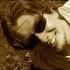

About Pharo
Pharo contributors
People around the world contribute to Pharo (by alphabetical order):
Jeff Gray
Dale Henrichs
Jannik Laval
Diógenes Alberto Moreira
Johannes Rasche
Pharo is opensource
Pharo an opensource project released under the MIT license.
The board
Pharo has a board composed of Marcus Denker, Stephane Ducasse, Sven Van Caekenberghe, Tudor Gîrba and Esteban Lorenzano.
The role of the board is to make decisions if in the future the community can't decide on a course of action.